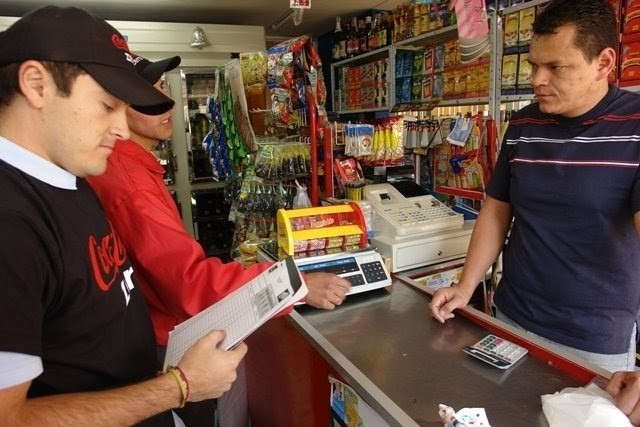

Bajo este esquema cuentas con personal en campo, encargado de realizar la negociación y visita con los clientes y prospectos, con el objetivo de tomar pedidos, que serán entregados posteriormente por el mismo o por otro grupo de empleados. Normalmente este preventista, esta facultado para recibir el anticipo o pago del pedido, así como facturar.
